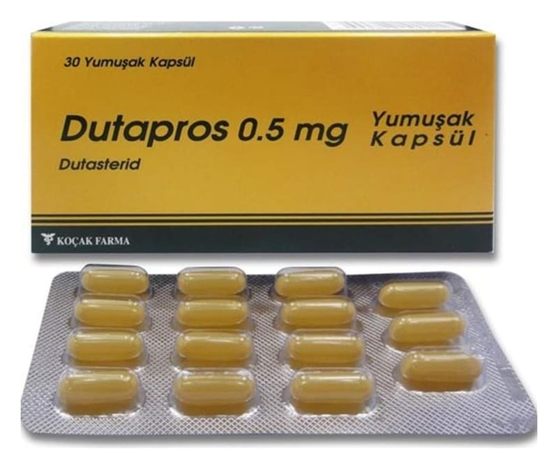

Dutapros 0,5 mg Yumuşak Kapsül, 30 Adet

Ne için kullanılır
KT · Bölüm 1DUTAPROS 5 alfa-redüktaz enzim inhibitörleri adı verilen ilaç grubuna aittir ve iyi huylu
prostat büyümesi olan erkeklerde kullanılır.
DUTAPROS, 30 kapsül içeren blister ambalajlarda piyasaya sunulmaktadır.
Prostat büyüdükçe idrar çıkı şında rahatsızlık ve sık tuvalete girme gibi idrar yolları sorunları oluşabilir. Aynı zamanda idrar akışının daha yavaş ve daha az güçlü olmasına neden olabilir. Tedavi edilmediğinde, idrar akışınızın tamamen bloke olması riski vardır (akut üriner retansiyon). Bu durum acil olarak tıbbi tedavi gerektirir. Bazı durumlarda prostat bezini almak veya boyutlarını küçültmek için ameliyat gerekebilir. DUTAPROS dihidrotestosteron üretimini azaltır, bu da prostatı küçültmeye ve semptomları gidermeye yardımcı olur. Bu durum akut üriner retansiyon riskini ve ameliyat olasılı ğını azaltır.
DUTAPROS aynı zamanda tamsulosin (büyümüş prostat semptomlarının tedavisinde kullanılır) adında ba şka bir ilaçla birlikte de kullanılabilir.